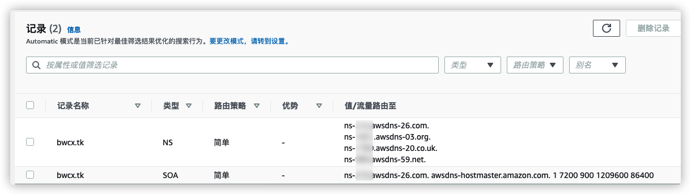
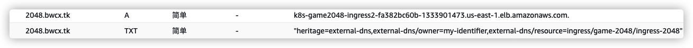
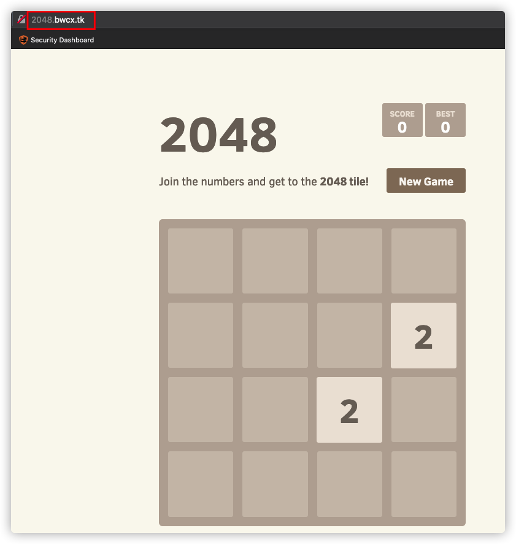

ExternalDNS 使 Kubernetes 资源可以通过公共 DNS 服务器发现。它从 Kubernetes API 中检索资源（服务、入口等）列表，以确定所需的 DNS 记录列表。它本身不是 DNS 服务器，而只是相应地配置其他 DNS 提供商，例如 AWS Route 53。
官网 https://github.com/kubernetes-sigs/external-dns
参考 https://github.com/kubernetes-sigs/external-dns/blob/master/docs/tutorials/alb-ingress.md
bwcx.tk 为您自己的域名mkdir ${HOME}/environment/dns
cd ${HOME}/environment/dns
export DNS_TEST_DOMAIN="bwcx.tk"
cat > iam-dns-policy.json <<EOF
{
"Version": "2012-10-17",
"Statement": [
{
"Effect": "Allow",
"Action": [
"route53:ChangeResourceRecordSets"
],
"Resource": [
"arn:aws:route53:::hostedzone/*"
]
},
{
"Effect": "Allow",
"Action": [
"route53:ListHostedZones",
"route53:ListResourceRecordSets"
],
"Resource": [
"*"
]
}
]
}
EOF
aws iam create-policy \
--policy-name AllowExternalDNSUpdates \
--policy-document file://iam-dns-policy.json
eksctl create iamserviceaccount \
--name external-dns \
--namespace kube-system \
--cluster ekslab \
--attach-policy-arn=arn:aws:iam::${ACCOUNT_ID}:policy/AllowExternalDNSUpdates \
--override-existing-serviceaccounts \
--approve
创建完成以后检查
kubectl describe sa external-dns -n kube-system
kubectl api-versions | grep rbac.authorization.k8s.io
这里实验默认是启用的，输出类似如下：
rbac.authorization.k8s.io/v1
rbac.authorization.k8s.io/v1beta1
aws route53 create-hosted-zone --name ${DNS_TEST_DOMAIN}"." --caller-reference "external-dns-test-$(date +%s)"
创建完成后，可以在 Route 53 控制台查看 https://console.aws.amazon.com/route53/v2/hostedzones#
如果您的域名不是通过AWS注册的，需要配置类似下图的 name servers 地址到您的DNS解析提供商

aws route53 list-hosted-zones-by-name --output json --dns-name ${DNS_TEST_DOMAIN}"." | jq -r '.HostedZones[0].Id'
cat > external-dns.yaml <<EOF
apiVersion: rbac.authorization.k8s.io/v1beta1
kind: ClusterRole
metadata:
name: external-dns
rules:
- apiGroups: [""]
resources: ["services"]
verbs: ["get","watch","list"]
- apiGroups: [""]
resources: ["pods"]
verbs: ["get","watch","list"]
- apiGroups: ["extensions"]
resources: ["ingresses"]
verbs: ["get","watch","list"]
- apiGroups: [""]
resources: ["nodes"]
verbs: ["list"]
- apiGroups: [""]
resources: ["endpoints"]
verbs: ["get","watch","list"]
---
apiVersion: rbac.authorization.k8s.io/v1beta1
kind: ClusterRoleBinding
metadata:
name: external-dns-viewer
roleRef:
apiGroup: rbac.authorization.k8s.io
kind: ClusterRole
name: external-dns
subjects:
- kind: ServiceAccount
name: external-dns
namespace: kube-system
---
apiVersion: apps/v1
kind: Deployment
metadata:
name: external-dns
namespace: kube-system
spec:
selector:
matchLabels:
app: external-dns
strategy:
type: Recreate
template:
metadata:
labels:
app: external-dns
spec:
serviceAccountName: external-dns
securityContext:
fsGroup: 65534
containers:
- name: external-dns
image: k8s.gcr.io/external-dns/external-dns:v0.8.0
args:
- --source=service
- --source=ingress
- --domain-filter=${DNS_TEST_DOMAIN} # will make ExternalDNS see only the hosted zones matching provided domain, omit to process all available hosted zones
- --provider=aws
- --aws-zone-type=public # only look at public hosted zones (valid values are public, private or no value for both)
- --registry=txt
- --txt-owner-id=my-identifier
EOF
kubectl apply -f external-dns.yaml
检查
kubectl get pod -l app=external-dns -n kube-system
kubectl logs -f $(kubectl get po -n kube-system | egrep -o 'external-dns[A-Za-z0-9-]+') -n kube-system
下面更新示例应用 2048 game
cd ${HOME}/environment/2048
cat > 2048_ingress_dns.yaml <<EOF
apiVersion: networking.k8s.io/v1
kind: Ingress
metadata:
namespace: game-2048
name: ingress-2048
annotations:
kubernetes.io/ingress.class: alb
alb.ingress.kubernetes.io/scheme: internet-facing
alb.ingress.kubernetes.io/target-type: instance
# for creating record-set
external-dns.alpha.kubernetes.io/hostname: 2048.${DNS_TEST_DOMAIN} # give your domain name here
external-dns.alpha.kubernetes.io/ttl: "60"
spec:
rules:
- http:
paths:
- path: /
pathType: Prefix
backend:
service:
name: service-2048
port:
number: 80
EOF
kubectl apply -f 2048_ingress_dns.yaml
kubectl logs -f $(kubectl get po -n kube-system | egrep -o 'external-dns[A-Za-z0-9-]+') -n kube-system
输出类似如下：
time="2021-06-25T09:10:51Z" level=info msg="Desired change: CREATE 2048.bwcx.tk A [Id: /hostedzone/Z0759090APIKX508GBYY]"
time="2021-06-25T09:10:51Z" level=info msg="Desired change: CREATE 2048.bwcx.tk TXT [Id: /hostedzone/Z0759090APIKX508GBYY]"
time="2021-06-25T09:10:51Z" level=info msg="2 record(s) in zone bwcx.tk. [Id: /hostedzone/Z0759090APIKX508GBYY] were successfully updated"
在明细里可以看到自动添加的DNS解析记录 
